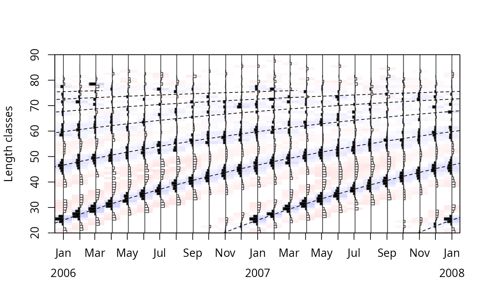

Thsi function estimates von Bertalanffy growth function (VBGF) curves for a set of growth parameters.
Usage
lfqFitCurves(
lfq,
par = list(Linf = 100, K = 0.1, t_anchor = 0.25, C = 0, ts = 0),
agemax = NULL,
flagging.out = TRUE,
lty = 2,
lwd = 1,
col = 1,
draw = FALSE,
tincr = 0.05
)Arguments
- lfq
a list of the class "lfq" consisting of following parameters:
midLengths midpoints of the length classes,
dates dates of sampling times (class Date),
catch matrix with catches/counts per length class (row) and sampling date (column),
rcounts restructured frequencies,
peaks_mat matrix with positive peaks with distinct values,
ASP available sum of peaks, sum of posititve peaks which could be potential be hit by growth curves;
- par
a list with following growth parameters:
Linf length infinity in cm (default: 100),
K curving coefficient (default: 0.1),
t_anchor time point anchoring growth curves in year-length coordinate system, corrsponds to peak spawning month (range: 0 to 1, default: 0.25),
C amplitude of growth oscillation (range: 0 to 1, default: 0),
ts summer point (ts = WP - 0.5) (range: 0 to 1, default: 0);
- agemax
maximum age of species; default NULL, then estimated from Linf
- flagging.out
logical; should positive peaks be flagged out? (Default : TRUE)
- lty
The line type. Line types can either be specified as an integer (0=blank, 1=solid, 2=dashed (default), 3=dotted, 4=dotdash, 5=longdash, 6=twodash) or as one of the character strings "blank", "solid", "dashed", "dotted", "dotdash", "longdash", or "twodash", where "blank" uses 'invisible lines' (i.e., does not draw them).
- lwd
The line width, a positive number, defaulting to 2. The interpretation is device-specific, and some devices do not implement line widths less than one. (See the help on the device for details of the interpretation.)
- col
A specification for the default plotting color. See section 'Color Specification'.
- draw
logical; indicating whether growth curves should be added to existing lfq plot
- tincr
step for plotting
Value
A list with the input parameters and following list objects:
Lt: dataframe with ages and lengths of the cohorts,
agemax: maximum age of species.
ncohort: number of cohorts,
ASP: available sum of peaks, sum of posititve peaks which could be potential be hit by growth curves. This is calculated as the sum of maximum values from each run of posive restructured scores.
ESP: available sum of peaks,
fASP: available sum of peaks,
fESP: available sum of peaks,
Details
t_anchor subsitutes the starting point from known from Fisat 2.
This parameter is necessary for anchoring the growth curves on the time axis.
It does not subsitute t0. However, it corresponds to the peak spawning
of the species (x intercept of growth curve) and has values between 0 and 1,
where 0 corresponds to spawning at the 1st of January and 0.999 corresponds to the
31st of December. The default value of 0.25 or 3/12 corresponds the third month
of the year, March.
References
Brey, T., Soriano, M., and Pauly, D. 1988. Electronic length frequency analysis: a revised and expanded user's guide to ELEFAN 0, 1 and 2.
Pauly, D. 1981. The relationship between gill surface area and growth performance in fish: a generalization of von Bertalanffy's theory of growth. Meeresforsch. 28:205-211
Pauly, D. and N. David, 1981. ELEFAN I, a BASIC program for the objective extraction of growth parameters from length-frequency data. Meeresforschung, 28(4):205-211
Pauly, D., 1985. On improving operation and use of ELEFAN programs. Part I: Avoiding "drift" of K towards low values. ICLARM Conf. Proc., 13-14
Pauly, D., 1987. A review of the ELEFAN system for analysis of length-frequency data in fish and aquatic invertebrates. ICLARM Conf. Proc., (13):7-34
Pauly, D. and G. R. Morgan (Eds.), 1987. Length-based methods in fisheries research. (No. 13). WorldFish
Pauly, D. and G. Gaschuetz. 1979. A simple method for fitting oscillating length growth data, with a program for pocket calculators. I.C.E.S. CM 1979/6:24. Demersal Fish Cttee, 26 p.
Pauly, D. 1984. Fish population dynamics in tropical waters: a manual for use with programmable calculators (Vol. 8). WorldFish.
Quenouille, M. H., 1956. Notes on bias in estimation. Biometrika, 43:353-360
Somers, I. F., 1988. On a seasonally oscillating growth function. ICLARM Fishbyte 6(1): 8-11.
Sparre, P., Venema, S.C., 1998. Introduction to tropical fish stock assessment. Part 1. Manual. FAO Fisheries Technical Paper, (306.1, Rev. 2): 407 p.
Tukey, J., 1958. Bias and confidence in not quite large samples. Annals of Mathematical Statistics, 29: 614
Tukey, J., 1986. The future of processes of data analysis. In L. V. Jones (Eds.), The Collected Works of John W. Tukey-philosophy and principles of data analysis: 1965-1986 (Vol. 4, pp. 517-549). Monterey, CA, USA: Wadsworth & Brooks/Cole
Examples
data(synLFQ5)
res <- lfqRestructure(synLFQ5, MA=11)
plot(res)
tmp <- lfqFitCurves(res, par=list(Linf=80,K=0.5,t_anchor=0.25), draw=TRUE)
